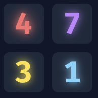
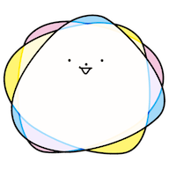
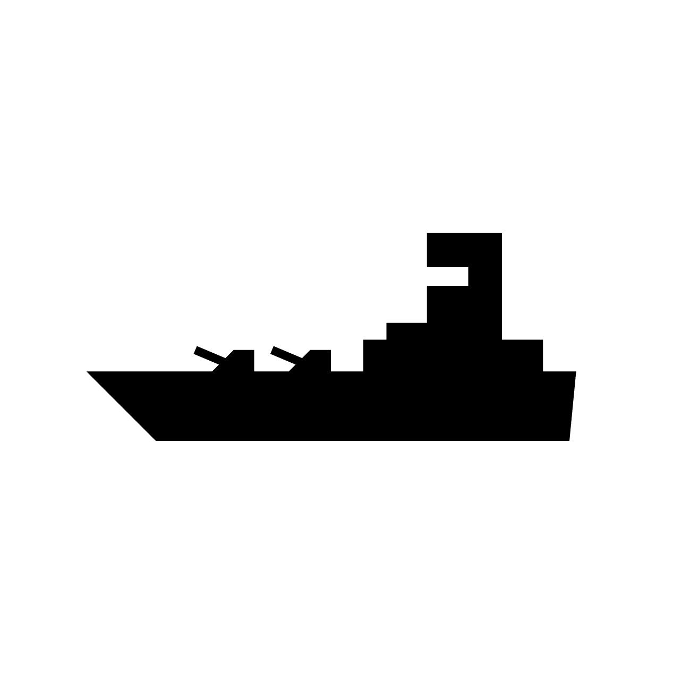

GitHub
GitHub
 自己紹介
自己紹介
はじめまして。私は、ニューロダイバーシティの推進によって、「生きづらさのない社会」を目指す「一般社団法人ニューロダイバーシティ協会」の代表理事を務めています。所属している SFCすずかんゼミでも、このプロジェクトを扱っています。
趣味でITサービスの開発を行っており、最近は月間アクティブ14万人の人気ゲーム「リバーシWeb」やAI関連サービスの制作に取り組んでいます。
趣味でITサービスの開発を行っており、最近は月間アクティブ14万人の人気ゲーム「リバーシWeb」やAI関連サービスの制作に取り組んでいます。
制作物
Webサービス
「Yuki Lab」ブランドで無料のWebゲームやツールを開発・提供しています。
人気 + おすすめランキング
2位
将棋Web
AI対戦や対人戦が楽しめる無料の将棋ゲーム。禁じ手や千日手にも対応しています。
3位
ピンボール
Web上で遊べるピンボール。スマホでも遊べます。
チェスゲーム
チェスのAI対戦や対人戦を無料で楽しるWebサイトを制作しました。

独自ゲーム
4137
数字を繋げて消していくオリジナルの数字パズル。慶應義塾大学SFCの講義・スマートデバイスプログラミングで《特に優秀な作品》として表彰されました。
文字数カウンター
サロゲートペアや絵文字シーケンスにも対応した正確なリアルタイム字数カウント

社会起業
タスク管理AI
タスク管理AI
Google Calendar APIをChatGPTと連携させることで、AI駆動のタスク管理システムを制作。ユーザーから高い星評価を頂いています。本GPTs以外にも、いくつか人気のGPTsを公開中です。
社会起業
一般社団法人ニューロダイバーシティ協会 公式サイト
一般社団法人ニューロダイバーシティ協会 公式サイト
私が代表を務めている団体の公式ページ。感覚過敏やLDを考慮したニューロ・インクルーシブデザインを心がけて制作しました。
正規表現に対応の文字列置換ツール
正規表現やマクロによる柔軟な文字列検索・置換をシンプルなUXで実現しています。
日本語URLエンコードツール
X（ツイッター）などのSNSで認識されづらい日本語URLを、認識されやすい形式に変換します。
スマートタイマー
コマンドで操作可能なタイマー。大画面での時間表示や、アクセシビリティを考慮した音声読み上げにも対応しています。

社会起業
発達AI（非公開）
発達AI（非公開）
ニューロダイバージェントの当事者の1300個の経験則の独自データベースを踏まえ、チャットAIがアドバイスを生成するサービスを構築しました。

海戦ゲーム（バトルシップ）
古くからある海戦ゲームをWeb上で遊べるゲームとして制作。10段階の難易度のAIと対戦可能です。
ネイティブアプリ
開発したiOS向けアプリ

専門家の話が聞けるSNS・Senhana
サービス終了
中学生時代に、当時の新聞部の部長として調査報道の重要性を感じたことをきっかけに、専門家に「取材」ができるSNSをiPhone・iPad向けに公開。Swiftを独学して開発し、国会議員の方への「取材」などを実現しました。